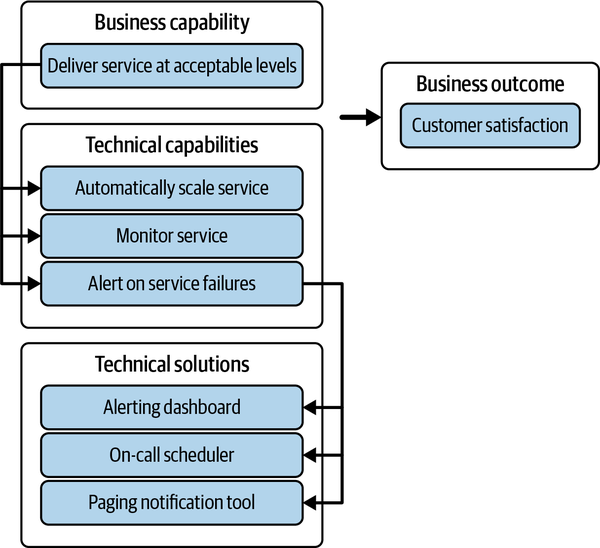
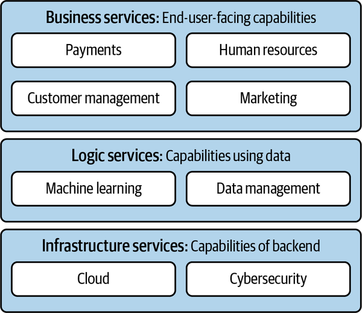
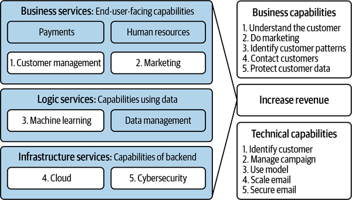

Enterprise architecture principles help ensure that architecture decisions are made consistently. The first enterprise architecture principle in the very short manifesto for effective enterprise architecture is contextual understanding over siloed decision making.
Ever make a perfect architecture decision? If so, kudos on an extremely rare achievement. In my experience, architecture decisions require trade-offs, and therefore tend to be merely good enough rather than perfect.
The good enough result depends on what considerations are made during the analysis of what to trade off against. Often, the quality of an architecture decision is directly impacted by the experience and knowledge of the person who made it, and what they considered as trade-offs and implications. If trade-offs are improperly considered, the decision is at risk of being shortsighted.
Contextual understanding refers to understanding all the factors that form the problem statement and rationale of the decision, to include background, usage scenarios, assumptions, constraints, solution alternatives, and implications pertaining to the decision. Siloed decision making refers to making decisions based solely on one’s own experiences and point of view.
Here’s a real-world example. My husband and I decided to treat ourselves by not cooking for dinner. Now, if we were to make that decision in a silo, we would consider only what we like to eat, the cost of the meal, and our memories of what restaurants we enjoyed. Ultimately, we would likely go out to a nearby restaurant. However, with the context that our children also needed to eat and have different tastes, that it was a weeknight and therefore we were shorter on time than a weekend, and that we needed leftovers, this resulted in a different decision—ordering in from a restaurant that mostly pleased everyone. As mentioned earlier, decisions tend to be good enough rather than perfect, so the one person who didn’t like the food made do with a tried and true alternative found at home.
You’ll notice that the word over is included in the principle that gives its name to this chapter. This is deliberate, to emphasize the item on the left, contextual understanding, as more valuable than the item on the right, siloed decision making. Thus, the item on the right does have some value, just comparatively less.
You see, being able to make decisions in silo is actually quite important to avoid paralysis by analysis. Paralysis by analysis means waiting on analyzing so many factors, and being so concerned with the unknown or unpredictable factors, that no decision is made. Siloed decision making can help with this scenario to build confidence through one’s experiences to provide a well-formed opinion even if all desired contextual information isn’t available. One mechanism that can help shore up this well-formed opinion is to document all assumptions that are made, such that if any factor does change or turn out differently, it is easier to go back and review the decision and make changes. This helps the decision maker take calculated risks and make forward progress by still making a decision even when not all context is available.
Imagine crossing the street at a crosswalk in an intersection with a stop sign and seeing a car bearing down on you. Without waiting for the context of whether it will stop or not, you will use your experience to get out of its way because you know that in human versus car scenarios, car wins. Time-sensitive decisions tend to timebox how much context can be gathered. As a result, it is also an important skill to be able to prioritize sources of context, such that the most impactful contextual factors are considered.
Decisions made with contextual understanding are likely to be less brittle and more sustainable than those made without it. This is key in architectural decision making since, although architectures do evolve over time, changing certain architectural decisions after implementation can be very painful and very difficult. Enabling flexibility as an outcome is key to evolutionary architecture.
A good example of this concept is in application interface design. Designing this contract between applications to exchange data is an architectural matter that needs to be made with context of usage, performance, and security requirements. Using the interface as an abstraction allows the application to change behind the scenes as it needs, such as adopting a more modern technology stack.
The more painful it will be to change a decision, the more important it is to gather context to make that decision.
Now that I’ve shared my perspective on the value of contextualized decision making over siloed decision making, I’ll spend the next section discussing where context comes from and how these factors can be prioritized.
To apply the principle of contextual understanding over siloed decision making, it is helpful to define a capability classification model that groups capabilities into architecture domains. This model allows for decisions about those capabilities, and the technological solutions that provide them, to be made in context of the overall domain and any other dependent domains. The domain context itself is defined in relation to the business processes and outcomes that it supports.
Capabilities are enduring in a way that organizational structures that define ownership of technology solutions are not. Capabilities for a core business function typically stay the same, even as technology evolves to provide those capabilities. Capabilities themselves evolve based on business needs or business practices evolving. This is all well and good, but what exactly are capabilities? The next section will clarify.
Are you wondering if I mean business capabilities or technical capabilities when I say capabilities? Business capabilities describe the abilities of the business, the organization, to do things. Business capabilities are not tied to any given solution, part of the organization, role, or function. As mentioned earlier in terms of endurance, business capabilities do not change even if the organization splits or changes, or a new technology is used to implement the capability. Technical capabilities describe using technology to result in business outcomes. Similar to business capabilities, technical capabilities are also enduring and do not change even when an organization or a specific tool changes. Technical capabilities map to business capabilities. Technical solutions map to technical capabilities. Together, these mappings provide a lineage from technology to business outcomes. Thus, to summarize, I mean both business and technical capabilities.
Figure 8-1 illustrates an example using capability mapping lineage in the context of resiliency.

One thing you may notice from the example in Figure 8-1 is that a capability defines what the ability is, not how the ability is implemented. The capabilities are agnostic of the choice of technology solution or tooling.
The architectural domain model should have two levels, a business capability model and a technical capability model, which are tied together. The business capability model typically helps an enterprise better understand its own business functions and abilities, which provides the context necessary to make important strategic decisions such as where to invest. Similarly, the technical capability model typically helps an enterprise better understand its technology solution landscape and how technologies are being applied. It provides the context to make various decisions, including decisions to:
Overcome gaps and technical weaknesses.
Overcome arbitrary uniqueness and reduce duplication or converge development efforts.
Invest in more sustainable solutions rather than bespoke, niche projects.
Make underlying technology changes and be able to identify implications to the organization or business as a result of the change.
Figure 8-2 illustrates such a layered architectural domain model, using the traditional three-tier application architecture of presentation, logic, and data layers as inspiration.

Unlike the traditional three-tier model—where the presentation tier at the top and the data tier at the bottom do not directly communicate with one another—in this architectural domain model, the domains and their capabilities can interact with one another to map to a business process. The value of the layer is simply in nesting or categorizing domains for human readability and discoverability.
Figure 8-3 builds on the layered architecture domain model to illustrate emailing a customer as the mapped business process.

Defining capabilities—whether business or technical—and defining the domains that group them is more of an art than a science. Here are some considerations for defining capabilities:
For business capabilities, what is the business doing? What can the business do? For technical capabilities, what can the technology do? In the previous section’s example, the business is trying to contact customers, and the corresponding technical capability is to email the customers.
Typically, you will find that you end up with a hierarchy of multiple levels. You can have as many levels as make sense for your organization to understand what the capabilities mean, and how they drill down and map to one another. In the previous section’s example, the email capability stems from reusable infrastructure services, rather than being a bespoke capability that only services the marketing domain to contact customers.
Decide on whether you will use verbs or nouns to define your capabilities, and their order. For example, is it data management or manage data? The goal is to make the domain model self-service so that users of the model who make architecture decisions, be they an architect themselves or a person in a product or engineering role, can understand the capability definition. This common language will also help to create shared alignment across an organization, which is of the utmost importance to establish the architecture decisions related to a domain. In the previous section’s example, the “verb first, noun second” order is used.
Here are some considerations for defining architectural domains:
The capabilities in a group should be related in some logical way to support a given business purpose. In the previous section’s example, customer management is distinct from marketing, although marketing is a way to manage customer expectations.
Similar to the level of detail consideration mentioned earlier, groupings can get as detailed as needed to use the domain and their child domains in decision making. Rather than create these domain definitions in the abstract for the sake of having a model, do so with the aim of clarifying ambiguity with the right level of detail. In the previous section’s example, customer management implies managing any kind of customer—both prospective and existing—that are used by the marketing campaigns. But perhaps this is a differentiator for your organization, and you would have different domains for capabilities that target prospective customers versus capabilities that target existing ones.
The architectural domain model needs to be an effective tool to aid architecture decision making. As a result, it should be very clear what roles are accountable for what responsibilities as related to an architecture domain. For example, someone needs to be accountable for defining the capabilities (usually a business architect), for mapping the technical solutions (usually a domain architect), for the architecture decision (usually the domain architect), for implementing the architecture decision (usually the technology lead of the impacted technical solution), and for prioritizing the architecture decision for implementation (usually the product lead of the impacted technical solution).
Although the architectural domain model is an important mechanism to provide context for a number of architecture decisions, it is not the only one.
Context for all architecture decisions includes a well-defined problem statement. Depending on the kind of decision that needs to be made, additional factors are helpful to provide more context, such as principles and constraints.
For example, the architectural domain model should help determine that a decision is needed to invest in a new technical capability. To proceed with this decision may in turn require a build-versus-buy decision. To make a build-versus-buy decision, context typically also includes capturing all identified solution options, architecture principles, and NFRs to assess the solution options against. See Chapter 5 for examples of NFRs; you’ll want to define a standard baseline of NFRs to use in architecture decision making.
Some of these solution options may be discovered from what already exists in the architectural domain model, whereas others may come from industry and market research. Context may also include things like whether or not there is budget and capacity to support a new solution or whether or not it is feasible to extend an existing solution.
Timebox the time spent gathering context to accelerate decision-making progress and avoid analysis paralysis. Capture all trade-offs and implications as the context in which the decision was made.
In summary, contextual understanding includes a well-defined problem statement and all of the inputs that were taken into consideration to make the decision.
Let’s examine a few anecdotal case studies and study the themes that they present.
EA Example Company promoted a fast-paced culture where speed and time to market were of the essence. It needed to deliver a critical service, which, because it was critical, needed to be highly available. A seasoned architect, Alice, was asked to design the critical service’s high availability (HA) architecture.
Alice had several years of experience in designing technical systems with HA architectures. As a result, Alice assumed the level of HA needed and included proven architectural elements such as redundancy, scaling, and failover for the new critical service to overcome well-known failure modes. The engineering team conducted several performance tests and, sure enough, the critical service was able to horizontally scale to outpace demand, and failover as needed. Alice was proud of herself and did not think to consider how the new critical service would interact in an ecosystem of other services. The critical service went into production only to experience a severe incident a few days later when a downstream dependency failed and impacted the availability of this critical service.
What happened here?
This was an example of the aloof architect, who is not interested or involved in collaborating to contextualize decisions, because they are overly confident and certain in their instincts and experiences to make decisions. An aloof architect typically has good intentions, but their self-reliance can lead to missing important considerations that inevitably lead to flawed, shortsighted decision making. In this scenario, the aloof architect, Alice, did design a proven, highly available architecture for this critical service based on her own experiences, but she missed the architectural domain–level context of how this application fit into the ecosystem and failed to consider dependencies as a factor.
Key takeaways include the following.
Do:
Reuse proven architecture patterns.
Prioritize the need for more context to make impactful decisions.
Don’t:
Solve the wrong problem, or solve an incomplete problem without considering necessary context.
EA Example Company learned from experience and decided that, in addition to time to market, valuing operational excellence was also important. To deliver a critical service, the company relied on another experienced architect, Amanda, to design the critical service’s HA architecture. Amanda decided to first confirm the business requirements of what level of HA was needed for this critical service. Amanda first mapped the critical service to EA Example Company’s architectural domain model and mapped that in turn to critical business processes. Based on that mapping, Amanda was able to better understand what this critical service was dependent on and what the overall level of service available to customers needed to be.
Amanda asked questions of the architects and engineers of the dependent services to find out what kind of telemetry was available if they failed. She recognized that she was not a monitoring expert, and so she brought in a monitoring subject matter expert to figure out whether the telemetry was sufficient or not. She conducted a failure mode analysis to understand the probability and impact of such failures, as well as failures within the critical service’s components. Based on all this context, along with her own experiences, Amanda designed a highly available architecture, which included a caching layer to support acceptable stale data in the case of the loss of the dependency.
Amanda reviewed this architecture with peers and senior engineers, who asked questions and uncovered additional weaknesses that could be strengthened. As a result, she iterated a couple of times before finalizing the architecture. She collaborated with the engineering team to implement and test the architecture, and to tune key pieces such as the monitoring and alerting telemetry used for automation capabilities. It took a bit longer to get to production with their critical service, but the service was performant and highly available and gracefully degraded performance when faced with the failure of the dependent service rather than a full outage.
What happened here?
This example details the aware architect, who is consistently able to bring contextual understanding into their architecture decision making. An aware architect provides context from many different perspectives, ranging from business to technical, across different disciplines and subject matter domains. An aware architect is always learning and can bring in their context to inform the decision-making process. An aware architect is also self-aware in understanding their own limits and will bring in additional expertise as needed to supplement their own contextual understanding.
Key takeaways are summarized as follows.
Do:
Seek diverse perspectives and voices of dissent to bring in varied context and strengthen decision making.
Don’t:
Ignore the value of accepting trade-offs and their implications. In this scenario, the caching layer was an acceptable mitigation for the failure of the dependency, resulting in performance degradation rather than no adverse impact whatsoever.
As demonstrated by these anecdotal case studies, it is better to be an aware architect—aware of your own limitations and seeking to learn context—rather than an aloof architect who relies only on themselves.
Context is essential for making a high-quality, sustainable architecture decision. This chapter covered the first recommended enterprise architecture principle, contextual understanding over siloed decision making, for organizations to output great architecture decisions consistently.
One way to bring context into architecture decision making is through the architectural domain model. The architectural domain model for an organization is a key artifact output of an effective enterprise architecture function. It is a capability classification model that provides a common language for understanding what the business does. It provides traceability across business and technical capabilities to technology solutions in the context of business outcomes. That understanding provides a great deal of necessary context for architecture decisions, including the following:
Investment in new capabilities or new solutions
Deprecation of existing solutions
Build-versus-buy decisions regarding technology
Decisions on reuse of existing solutions
Investment into overcoming technical weaknesses or gaps
Aware architects are those who are adept at considering contextual understanding to make architecture decisions. They understand the limitations of their own experiences and point of view, and they actively seek out other points of view and frames of reference for a more holistic context from which to make decisions. Aloof architects are a cautionary tale; they rely only on themselves, their own experiences, and their own point of view to make decisions. They tend to have good intentions but are at risk of delivering shortsighted decisions.
The ability to perform siloed decision making, especially in times of duress or time sensitivity, is still an important skill. The risk of shortsighted decisions can be mitigated in part by understanding how to prioritize contextual factors to gather just what is needed to make a good enough architecture decision that takes calculated, documented, and accepted risks.
In other words, this architecture principle values contextual understanding more highly than siloed decision making, yet understands the need to make decisions in silo as well.